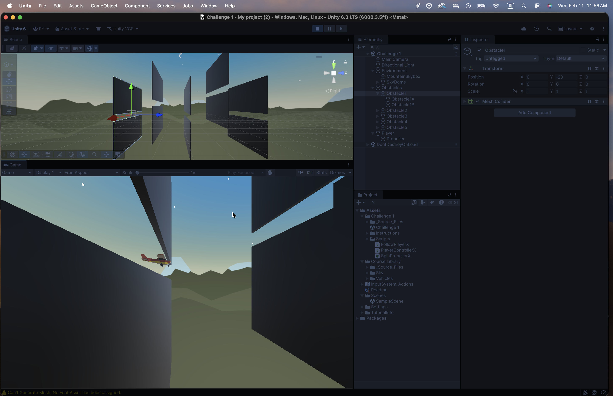
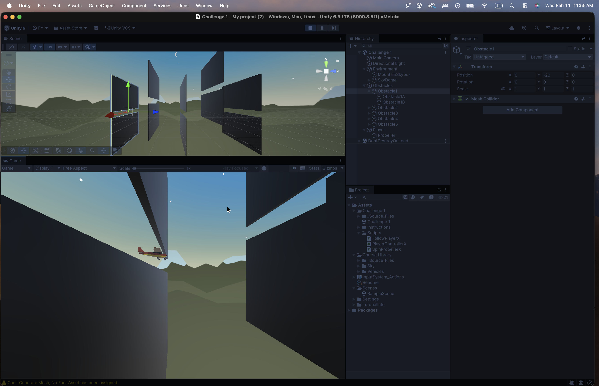

Experiment #1 – Personal Project
Name: Fei Y
Course: Junior Programmer – Mission 1
Personal Project Proposal
Project Title: Dream Archive – An Interactive Museum of Shared Dreams
Dream Archive is a first-person interactive experience set inside a minimalist virtual museum. The player walks through abstract exhibits representing emotional states found in dreams, such as uncertainty, repetition, and transformation.
Rather than telling a personal story, each exhibit responds to player proximity or interaction through subtle environmental changes, including lighting shifts, sound cues, or text overlays.
The goal of Experiment #1 is to prototype first-person movement and basic trigger-based interaction within a small dream-like environment.

Mission 1 – Player Control (Challenge 1: Plane Programming)
For Mission 1, I completed the Plane Programming challenge. I implemented continuous forward movement, vertical and horizontal controls, and visual tilt feedback using a custom PlayerControllerX script. I also set up a stable follow camera to support obstacle navigation.

 
